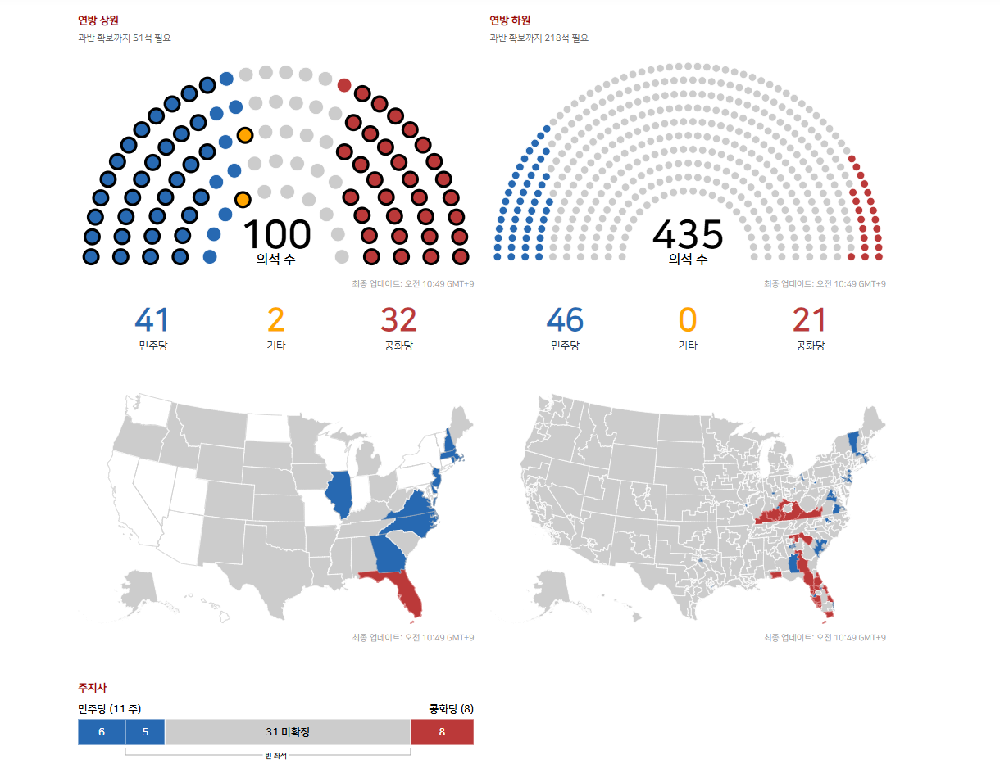
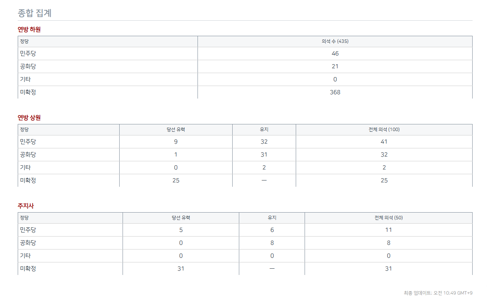

현재 민주당이 압승중


현재 민주당이 압승중
다른 곳은 몰라도 켄터키주는 이제 귀신같이 찾는다
왜 켄터키 이슈있어?
https://www.dogdrip.net/557034373
이제 다시 위로 올라가셔서 지도를 보세요
도람프 : 중간선거 졌어? 람프 삐졌어!
이건 사실상 본인이 자처한 일이라 봐야지...ㅋㅋㅋㅋ 고정 표밭이 있긴 하겠지만 아무래도 이번에는

핵잠은 승인해주고 가~~~~
뭐라하건 상원 1/3만 지켜도 트럼프는 해피하게 골프치러 갈거야.
세계가 파란색을 원하구먼
이란 전쟁만 시작 안했어도
무난하게 공화당이 이겼을거다 병신 트럼프야
쓸데없이 네좆타좆 말듣고 공격했다가
둘다 정권이 위험한 상태임 ㅋㅋㅋㅋ ㅈ병신들
쟤네 미국민주당은 일뽕이라 어찌될련지..
민주당 강세 동부부터 개표하니까 그런거아님? 콘벨트랑 텍사스쪽 개표 들어가봐야알거 같은데
ㅇㅇ 그래서 이따가 적당할때 갱신해서 올리려고
맞음.
텍사스는 이미 까기 시작했고, 마찬가지로 민주당 강세인 서부 지역은 아직 까지도 않았어서 뭐...
이번 선거는 상원 전체가 하는게 아니라 1/3정도만 함.
콘벨트주 이미 민주당이 이겼거나 넉넉하게 이기고 있는중.
부즈엉 부즈엉
내가보는 핵심지역은 캔자스랑 플로리다 텍사스인데 혹시 더 볼만한 재밌는 포인트 있음?
좀 정덕질할거면 플로리다나 중서부 시골 카운티들 체크해보고 2024년이랑 비교해보면 되게 잼씀. 걔네들은 개표도 빨리 끝나고 그래서 이르게 미리보기 좋아
그러면 딱 내가 말한 포인트아냐? 플로리다 랑 중서부시골 = 캔자스
아 주에 무관하게 시골 카운티 위주로 봐라는 이야기였음 ㅋㅋㅋ 걔네들이 원래 공화당 성향이 강한 편이라 스윙이 얼마나 났는지 이런거
플로리다 = 공화당 수성 (여긴 민주당 후보가 너무 심하게 극좌)
사우스 캐롤라이나, 텍사스 = 이미 민주당이 너무 크게 벌려서 사실상 이김
캔자스, 네브라스카, 아이오와 = 개표를 더 봐야하지만, 민주당이 일단 크게 이기고 있음.
미시건, 오하이오 = 민주당이 아슬아슬하게 이길듯
매인 = 수잔 콜린스 드디어 아웃 가능할지도.
텍사스가 크게 벌린정도야? ㄷㄷㄷ
개표율 50% 넘었는데 20% 차이임.
트럼프가 불법 체류자 잡는답시고 개지랄 떤거 때문에 지난 선거에서 트럼프 손 들어준 국경지대 라티노들이 개빡쳐서 반기 듬.
사실 플로리다도 극 공화당 우세였는데 2퍼 진땀승이라 ㄹㅇ 뭔가 뭔가 수준임
후보가 DSA병신만 아니었어도...
사실 dsa아니었어도 애초에 쉽지 않았을거라 뭐...
ㅇㅇ 플로리다는 워낙 뻘개져서.. 거기 라티노들은 다시 뒤집기 힘든 그런 양반들이라
플로리다는 개표 끝남?
ㅇㅇ 거긴 거의 완료
이제 트럼프가 계엄령 선포함?
이러니 저러니 해도 먹고 사는 이슈를 너무 등한시 했음.
상원과반 ㄲㅂ
이제 병신같은 ai 규제하는건가 양쪽에서 지랄하겠내
플로리다 독하다 독해
이야 댓글부대 대단해 참 ㅋㅋㅋㅋ얼마받고 이러냐
이변이 없어보임ㅋ
오늘 선거야?
반도체 ㅈ 됐누
이야 민주당이 상원을 먹는거여?
트럼프는의 행보를 보면 항상 일반인의 상식을 아득히 뛰어넘는 말을 하잖아.
부정선거 타령은 범인들의 비루한 상상력 수준 아닐까?
트럼프 정도의 풍운아라면 당적을 민주당으로 옮긴다고 선언해서
자신은 역대 최고의 압승을 한 다수당의 대통령이 되었다고 자화자찬 하지는 않을까?
레임덕 확정?
아직 현재 상원은 공화당이 36석임(유력 5석) 레임덕 하려면 민주당이 67석 먹어야 하는데 그건 못할듯
주식도 파래지는중
뭔 압승은 압승이야 ㅋㅋㅋㅋㅋ 기존 집권 당에서 FLIP이 얼마나 많이 됐는지 안 됐는지에 따라 "압승"을 겨루는건데 ㅋㅋㅋㅋㅋㅋㅋㅋㅋㅋㅋㅋ 기존에서 "N석 증가" 적혀있는걸 가져오는게 좋다고 좀 가르쳐준다
아직 확정안나서 제대로 안나온게 큰데 지금 경합주 개표, 특히 인구적어서 개표완료된 시골 카운티들 결과들 지난 선거에 비교해서 보면 스윙 심하게 나오긴 함요 ㅋㅋ
20-30퍼 움직인 카운티들도 보이는 수준이라. 걍 말도 안되는 수준임.
내가 말하는건 저 위에 사진이며 표며 단 한군데도 우리가 얘기하는 압승에 대한 요소를 전혀 설명하지않고있다는거야 ㅋㅋㅋㅋㅋㅋㅋㅋㅋㅋㅋㅋ
'현재는' 압승중이라고 했잖음 왜 혼자 화나있냐
생각보다 공화당 잘버티는데 ㅋㅋㅋㅋ 더 처참히 망할줄